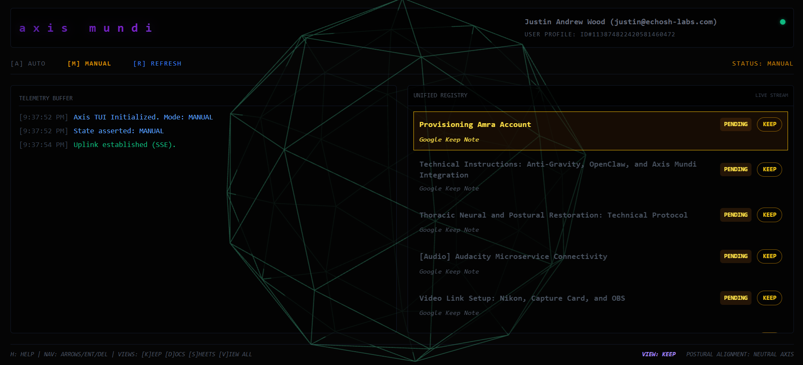

Axis Mundi is a high-performance connectivity bridge designed to ingest, triage, and orchestrate data between personal Google Gemini voice interfaces and professional Google Workspace environments. It leverages Go for backend orchestration and React for a low-latency, keyboard-centric terminal interface (TUI).
Toggle between AUTO (background monitoring) and MANUAL (destructive control) modes using keyboard-centric logic.
GCP Service Accounts with Domain-Wide Delegation bridge personal voice data into professional file structures.

Status and node values are demo labels; wire to live API if available.
How it works
Three steps from voice to action.
Speak directly to Gemini on mobile; the Keep note payload is detected automatically and queued as 'Pending' in the SQLite registry.
Operators review tasks in the high-speed TUI. An in-memory cache unifies Keep notes, Docs, Sheets, and Calendar events for rapid triage.
Status is transitioned to 'Execute' to trigger automation logic (e.g. drafting a Doc), tracked through to 'Complete'.
Core capabilities
- ⌘In-memory RegistryCache combining Keep, Docs, Sheets, and Calendar objects.
- ⌘Real-Time Telemetry via Server-Sent Events (SSE) for zero-latency monitoring.
- ⌘Keyboard-centric navigation: [PgUp/PgDn] cycle statuses, [A/M] swap modes.
- ⌘MCP server for remote agent integration with full status lifecycle control.
- ⌘Background polling logic ensures cleanup of purged or stale Keep records.
Architecture
Press
SaaSBrowser case study
How echoSH Bridges AI Intent and Local Execution with Industrial-Grade Reliability
Axis Mundi is featured in a SaaSBrowser founder case study on turning AI intent into reliable local execution through a Google Workspace ingestion layer and a lean Go orchestration model.
Verified founder case study for echoSH on SaaSBrowser.
Pipeline potentialities Conceptual
Axis Mundi handles the routing and UI layer, but the execution logic is entirely up to you. Below are illustrative ideas of powerful workflows that could be built on top of the Axis orchestrator.
Infinite Automations. One Unified Chassis.
These are just seven scenarios out of infinite possibilities. Whether you're mapping CRM workflows, localizing multimedia, or triggering physical hardware via Webhooks, Axis Mundi gives you the industrial-grade performance required to execute your exact vision securely.
Secure a Commercial License